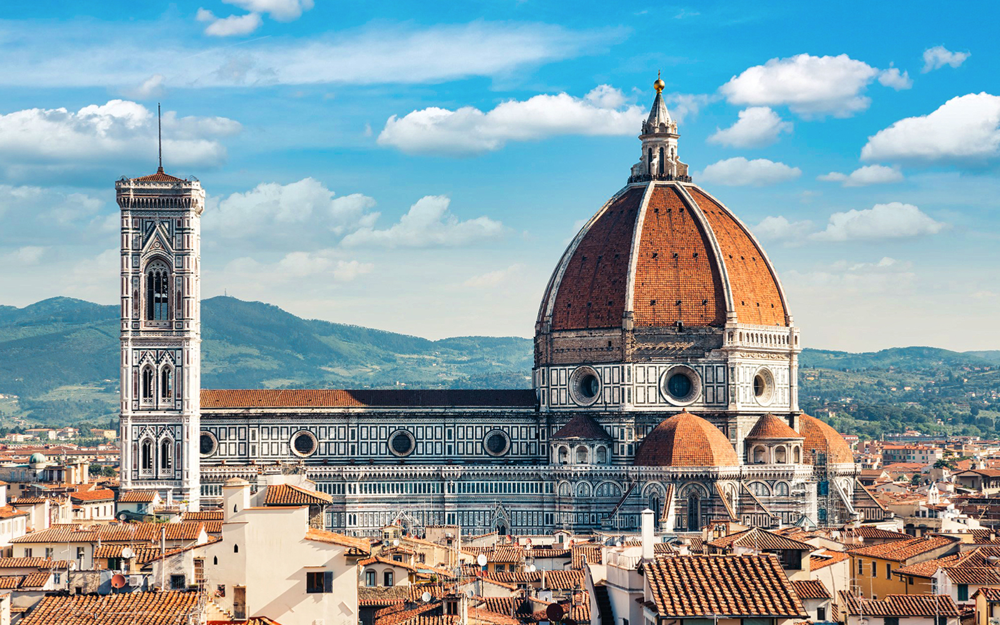

Roman Colosseum

The Roman Colosseum, also known as the Flavian Amphitheatre, is an ancient amphitheater located in the center of Rome, Italy. It was commissioned by Emperor Vespasian of the Flavian dynasty in AD 70-72 and completed in AD 80 by his son Titus. The Colosseum was used for various public spectacles, including gladiator contests, animal hunts, mock sea battles, and executions. It could hold up to 80,000 spectators and was a symbol of Roman power and entertainment. Over the centuries, the Colosseum has suffered damage from earthquakes and stone-robbers but remains one of Rome's most iconic and visited landmarks.
Saint Peters Basilica

Reasons to visit Saint Peters Basilica
- Architectural Significance
- Renaissance and Baroque Artiecture
- Michelangelo's dome, a masterpiece of engineering and art
- Religious Importance
- Burial Site of Saint Peter
- Attend a Mass or religious ceremony
-
Artistic Treasures
- View masterpieces from Raphael,Bernini, and Carvaggio
- Visit other Vatican Museums
Santa Maria del Fiore Cathedral
The Santa Maria del Fiore Cathedral, also known as the Florence Cathedral, is a renowned symbol of Florence, Italy. Construction of this iconic cathedral began in 1296 under the direction of Arnolfo di Cambio. The magnificent dome, designed by Filippo Brunelleschi, was completed in 1436 and remains a testament to Renaissance engineering and artistic achievement
Population Distribution in Italy